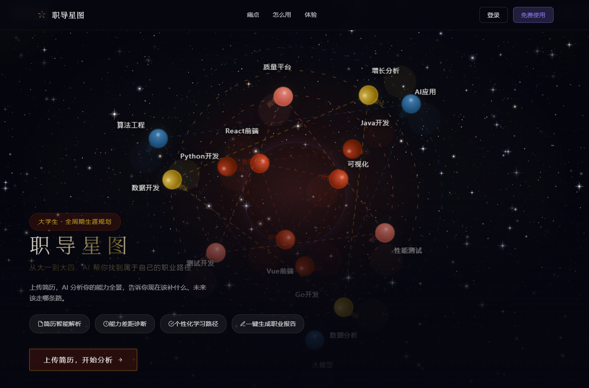
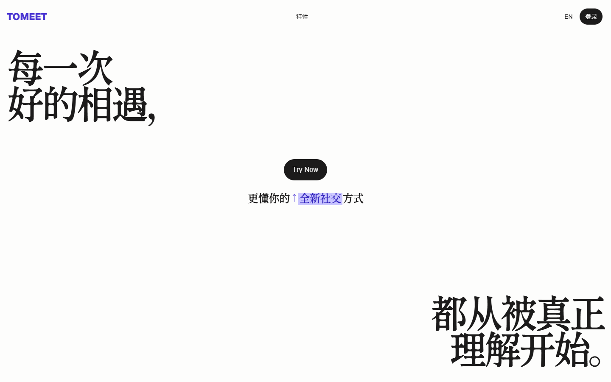
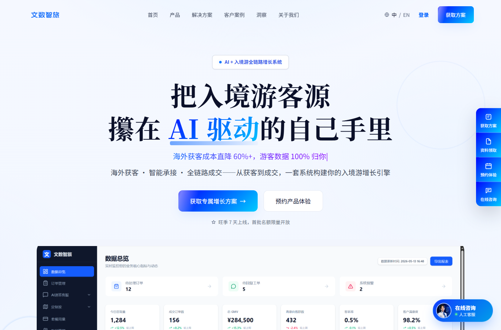

Hi, I'm
Neu.
用产品回应真实问题，
也保持探索和创造的好奇心。
Building products for the real world, with curiosity for what comes next.
Ideas into
real things.
我关注 AI 产品、Agent 研发、具身智能和机器学习，也在探索创业。我喜欢把想法做成真正有人使用的东西。
持续打磨产品审美、交付质量和简洁优雅的代码，同时通过科研夯实算法与模型基础。
I’m a builder exploring AI products, agents, embodied intelligence, machine learning, and entrepreneurship. I like turning ideas into things people actually use.
I care about design, thoughtful delivery, and elegant code, while continuing to deepen my research in algorithms and models.
正在做的产品
Things I’m building
Trace
探索人与 Agent 围绕同一件事持续协作，让思考、知识与工作能够非线性地连接、分叉和接续。
Exploring continuous human–agent collaboration, connecting thinking, knowledge and work with room to branch and continue.

CPA-Agent / 职导星图
面向大学生的多智能体职业规划产品。目前已有客户使用，并进入付费阶段。
A multi-agent career-planning product for university students, with customers and paid use.
View repository ↗ToMeet
一个可以长期对话的社交 Agent，通过持续了解与互动反馈，帮助人建立连接。
A social agent using ongoing conversation and feedback to help people connect.

GoMindOS
面向足式和轮式机器人的具身智能系统，探索 Agent 与感知、决策和行动的连接。
Embodied intelligence for legged and wheeled robots, connecting agents to perception, decision and action.

文数智旅
面向旅行社的 AI 文旅产品，聚焦入境游，从获客到服务与成交探索完整业务链路。
An AI travel product for agencies focused on inbound tourism, from acquisition to service and conversion.
Visit website ↗研究与荣誉
Research & recognition
研究
Research
FACDNet: A Frequency-Aware Cross-Layer Network for Remote Sensing Change Detection ↗Electronics · 2026
另有一篇第一作者会议论文投稿中。
A first-author conference paper is under submission.
竞赛与荣誉
Competitions
- AdventureX 2026Photon Track · First Prize / 赛道一等奖
- 全球校园人工智能算法精英大赛国家一等奖
- Global Campus Artificial Intelligence Algorithm Elite CompetitionNational First Prize
- 中国大学生服务外包创新创业大赛国家三等奖
- China Undergraduate Service Outsourcing Innovation & Entrepreneurship CompetitionNational Third Prize
Make it
with care.
我希望做出的东西不仅能用，还能经得起反复使用：有审美，有细节，对交付负责，代码保持优雅与简洁。
I want to make things that are not just usable, but carefully made: thoughtful design, responsible delivery, and elegant, simple code.
关于我
About me
OPC Builder；AI Lab 具身智能研究成员，探索 VLA 与 AgentOS；曾任软件公司全栈工程师；四川轻化工大学计算机科学与技术专业本科生。
OPC builder; embodied AI research member at AI Lab exploring VLA and AgentOS; former full-stack engineer; computer science undergraduate at Sichuan University of Science & Engineering.
Python · Java · Flask · FastAPI · PyTorch · MySQL · PostgreSQL · Redis · Docker · Git · Linux · VS Code · HTML · CSS · JavaScript · TypeScript